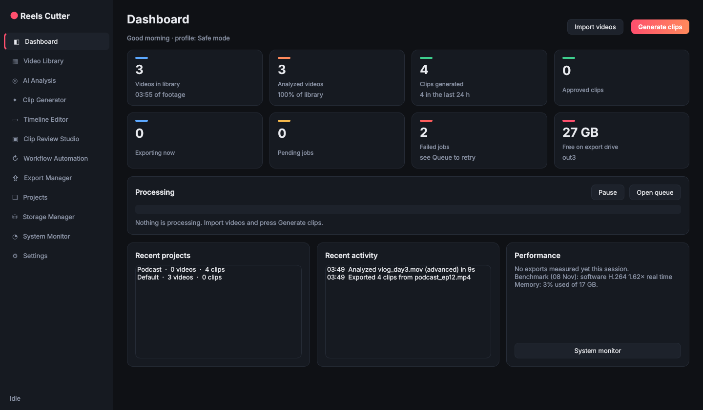
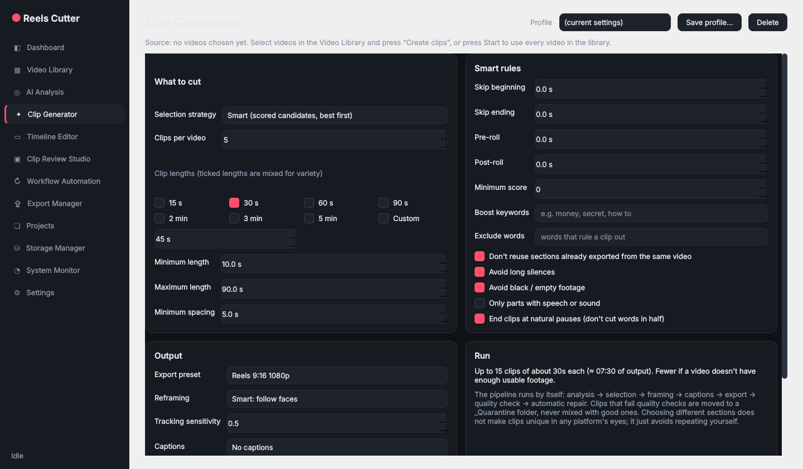
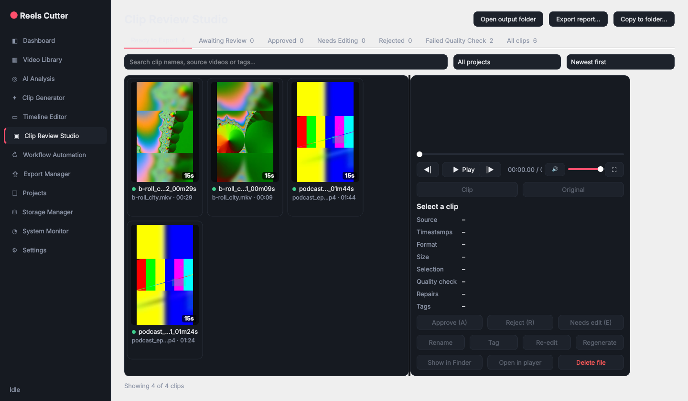
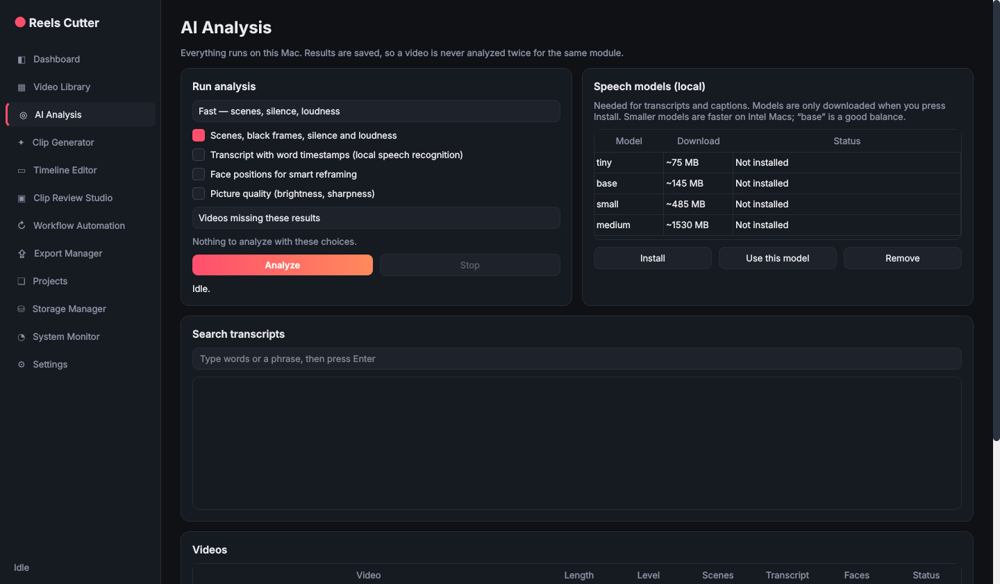

Reels Cutter finds the best moments in your podcasts, streams and vlogs and turns them into finished vertical clips with captions, automatically, right on your Mac.
Not sure which Mac you have? Apple menu → About This Mac. "Intel" or "Apple M…".

Set it up once, press start, and let it run. Every step happens on your computer.
Drag videos or whole folders onto the window, or set a watch folder that picks up new videos by itself.
Pick clip lengths (15 s to 5 min), how many per video, the format and caption style. Save it as a profile.
Reels Cutter analyzes, picks the strongest moments, frames faces, adds captions and exports.
Every clip is quality-checked. Find them in the review studio or straight in your output folder.
Built for creators with lots of footage and a normal laptop.
Scores candidate clips on speech, energy, strong openings, scene changes and your keywords, and explains every pick. Ends clips at natural pauses, never mid-word.
Turns wide videos into 9:16, 1:1 or 4:5 and keeps the speaker in frame with smooth, adjustable tracking.
Local speech recognition with word-by-word highlighted captions burned in, plus .srt and .vtt files.
Checks every clip for broken files, wrong size, missing audio, black or frozen video. Fixes what it can, and sets aside what it can't.
Handles 10,000+ videos with search, filters, duplicate detection, projects and external SSD support.
720p to 4K, 24 to 60 fps, H.264 or H.265, quality or bitrate control, loudness normalization and custom presets.
Background queue with pause and resume, scheduling, crash recovery and automatic retries. Quit any time, nothing is lost.
Detects your processor, memory and hardware encoders, benchmarks your machine and picks safe settings, including on older Intel Macs.
Your videos never leave your computer. No account, no subscription, no uploads. Your originals are never changed.



Yes. No account or subscription. Everything runs on your Mac.
No. Analysis, speech recognition and exporting all happen on your computer. There's an optional, off-by-default cloud ranking feature that only sends short transcript text, and only if you turn it on with your own API key.
Intel and Apple Silicon Macs with macOS 12 Monterey or newer. On first launch it detects your hardware and starts in a safe, low-memory mode.
Yes. The only download is the optional speech model for captions, and the app asks before downloading it.
MP4, MOV, MKV, AVI, WebM, M4V and more. Use footage you own or have the rights to publish.
Free for Mac. Takes a minute to install.